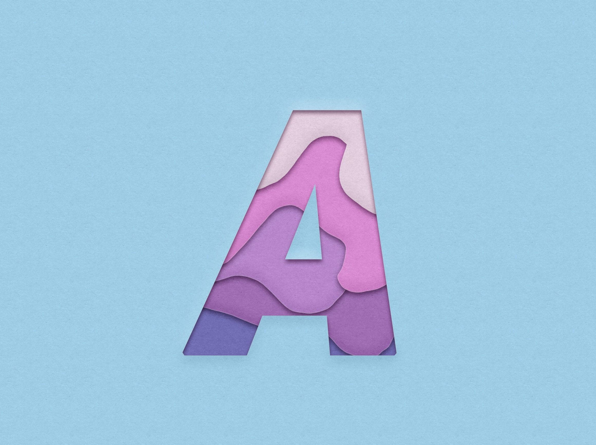
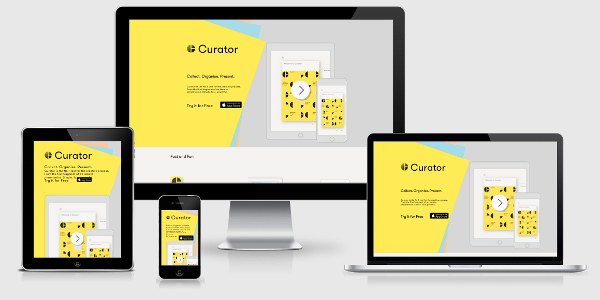
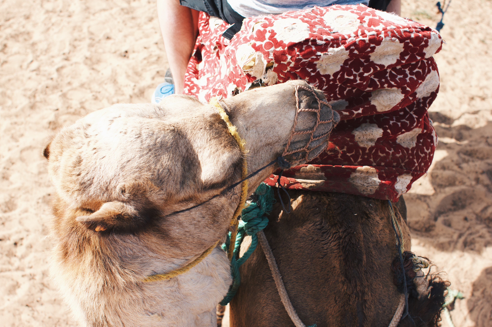

Can you take the train to Morocco?
A simple question I asked myself at the time. How can I travel to another continent ecologically. I've looked into that and yes, it is possible. Greta Thunberg has already demonstrated this by even travelling to America ecologically. If you decide to take the train to Morocco, you will see some of Europe's most beautiful cities on the way.

Travel by train
My green journey started in Berlin, with a night train to Paris. The night train of the Moscow-Paris line offers a unique experience in high quality. As soon as you feel tired, you can simply rest and sleep a little. In the morning Paris invited you to make inquiries. The ticket from Berlin to Paris with the night train is available from 39€. After Paris we went on to Barcelona. There were two possibilities to travel by train, either you take the TGV, which goes from Paris directly to Barcelona, or you choose a cheaper, slower alternative. This consists of first taking the train from Paris to Latour de Carol, which brings you just before the French Mediterranean coast. Then you take the night train to Barcelona, which costs around 12€. From Barcelona the adventure continues to Gibraltar, more precisely to Algeciras. Algeciras is a Spanish port city located directly on the Strait of Gibraltar. From here the destination is already in sight.From Algeciras the ferry to Morocco is available. Arrived at the port of Tangier (Morocco) the destination is finally reached and the question is answered. Yes you can go to Morocco by train, except for the small ferry trip to Tangier. My journey did not end in Tanger then. To explore Morocco's most beautiful cities was my goal. So I boarded the express train across Morocco. The railway network within Morocco has been and is being prepared and therefore travelling by train there is as pleasant as here in Germany
Casablanca and Marrakesh
First stop within Morocco was the famous city of Casablanca. Famous for the 1942 film of the same name, the port city invites you to visit the "Parc de la Ligue Arabe" or the Royal Palace. Casablanca enchants with its oriental atmosphere. The train continued through mountain and valley to Marrakech with picturesque changing landscapes. Marrakech's city centre is one single bazaar, which invites you to stroll around. On the "Djemaa el Fna" there are all kinds of things to see and discover. Snake charmers will cast a spell on you, because hopefully you won't come as close as here to a cobra. Like in a fairy tale of 1000 and one nights you stroll through the market passing the "flying" carpets and the wonder lamps.